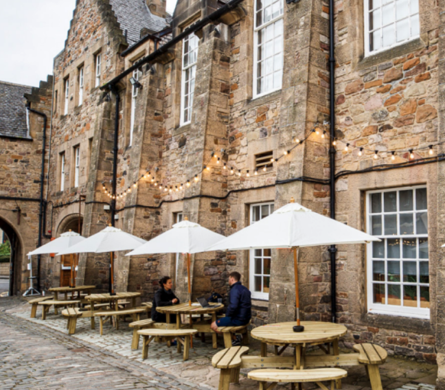
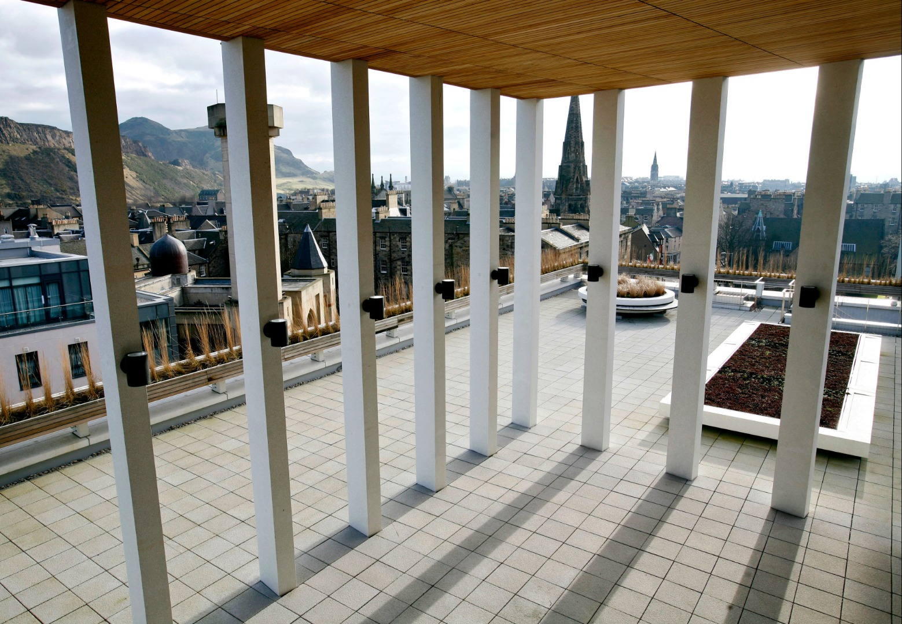

Information+
Conference 2023
Interdisciplinary practices in information design & visualization
22nd – 24th November
2023
Edinburgh, UK
#infoplus2023
We visualize you inside the info+ community:
Information+ is an interdisciplinary conference that brings together
Information+ is committed to enabling a diverse, inclusive and respectful environment where all participants can learn, network, and enjoy planned activities. We are dedicated to a harassment-free experience for everyone.
Information+ will be held in-person between November 22nd – 24th, 2023 at the University of Edinburgh, at minimal cost to attendees. Building on the experiences from the previous installments of Information+ 2016 at Emily Carr University of Art + Design, Vancouver, Information+ 2018 at University of Applied Sciences Potsdam, and a virtual Information+ 2021, we seek to significantly broaden the base of our interdisciplinary community. Again an in-person event, we want to emphasize exchange and community building.
The conference invites three types of contributions: Presentations, Workshops & Activities, and Exhibition Pieces. We invite proposals from all relevant fields and areas of professional practice, research, and pedagogy. We seek submissions of critical thoughts, theories, practices, and experiences around information design and data visualization and relevant application areas from both academic and non-academic perspectives including the humanities and science, art and design, and all related (interdisciplinary) fields.
In past years of Info+, presentations have covered a broad range of topics in information design
and
visualization, including:
General topics:
- Ethical considerations;
- Design processes;
- Education;
- Diversity and inclusion;
- Modalities of data representations (touch, sound, taste, .. );
- Novel technology and AI;
- Social and political issues;
- The environment and climate action;
- Advocacy and law;
- Health and medical applications;
- Cultural analysis and collections;
- Digital humanities;
- Data journalism.
Program
Stay tuned for more to come!
Keynote Speakers

Stefanie Posavec
stefanieposavec.comStefanie Posavec is a designer, artist, and author focused on creating playful, experimental, human-scaled approaches to communicating with data.
Her work has been exhibited at major galleries including the V&A, the Design Museum (Designs of the Year 2016), Somerset House, the Wellcome Collection, Bletchley Park (all UK), the Centre Pompidou (Paris), and MoMA (New York), where her work is also in the permanent collection. Her latest illustrated book (I am a book. I am a portal to the universe., co-authored with Miriam Quick) has received multiple accolades, including winning the UK Royal Society's Young People's Book Prize 2021. She has also co-authored two previous books: Dear Data and the journal Observe, Collect, Draw!

Shannon Vallor
shannonvallor.netShannon Vallor's research explores the philosophy and ethics of emerging science and technologies.
Shannon Vallor is the Baillie Gifford Professor in the Ethics of Data and Artificial Intelligence at the University of Edinburgh, where she directs the Centre for Technomoral Futures in the Edinburgh Futures Institute. A Fellow of the Alan Turing Institute, Professor Vallor's research maps the ethical challenges and opportunities posed by new uses of data and artificial intelligence. Her work includes advising academia, government and industry on the ethical design and use of AI, and she co-leads the UKRI’s Bridging Responsible AI Divides (BRAID) programme. She is the author of Technology and the Virtues: A Philosophical Guide to a Future Worth Wanting (Oxford University Press, 2016) and editor of the Oxford Handbook of Philosophy of Technology (2022). She is the recipient of multiple awards for teaching, scholarship and public engagement, including the 2022 Covey Award and the 2015 World Technology Award in Ethics.

Ebru Kurbak
ebrukurbak.netEbru Kurbak is an artist whose practice critically explores entanglements between art, technology, culture, and power.
The focus of her recent work has been on the implications of the historical social and spatial segregation of knowledge(s), with a particular emphasis on textiles and women's work. She has held residencies at renowned art and technology institutions such as La Gaîté Lyrique (Paris), V2_ Lab for the Unstable Media (Rotterdam), LABoral Cultural Center (Gijon) and EYEBEAM (New York). Her work has been exhibited in international venues such as the Ars Electronica Festival (Linz), ZKM (Karlsruhe), Siggraph (US), Microwave Festival (Hong Kong), Istanbul Design Biennial (Istanbul), Piksel Festival (Bergen), and the MAK - Museum of Applied Arts Vienna (Vienna), among others. In 2019, she was awarded the LACMA Art + Technology Grant by the Los Angeles County Museum of Art. She currently is Senior Research Fellow at the University of Applied Arts Vienna, where she runs the artistic research project "The Museum of Lost Technology" (2020 - 2024), funded by the Austrian Science Fund.
Call for Presentations
We are explicitly calling for presentations that will engage the community in timely, thought-provoking, and interdisciplinary conversations about information design and data visualization, including their design, assessment, and implications for society. We are looking for diverse positions and topics, and we especially encourage submissions from practitioners, artists, academics, and others that are not usually represented at visualization and data-oriented venues.
We are seeking presentations that motivate, inspire, and challenge the community, and that most importantly have the potential to spur cross-disciplinary conversations and ideas. Presentations can take many forms, including provocations, reflections, challenges, experiments, and works-in-progress. We invite new perspectives, ideas, or cross-disciplinary connections, and welcome presentation experiments that play with different modalities, performances, and audience participation.
Accepted submissions will be presented in-person (no online) in a single-track at the conference. Presentation lengths can vary between 5 and 15 minutes, followed by open discussions with conference participants. The program will be curated by an international programme committee and a jury, with an emphasis on promoting cross-disciplinary conversations.
Submission
Proposals for a presentation must include a pitch statement (max 3000 char) that considers the following questions:
- What is the topic of your presentation?
- What will attendees learn or experience?
- Why is it important for the Info+ community?
Your proposal must also include a description of the anticipated form of your presentation (max 1000 char): is it a provocation, a reflection, a challenge, an experiment, a work-in-progress? Will there be non-traditional components to the presentation? What is the proposed length of your talk: 5-10 mins, 10-20 mins?
Optionally, proposals may include (static) materials to help reviewers assess the potential of your presentation. These materials must be uploaded in the form of a PDF.
To submit: Submissions are made via EasyChair
submission site.
There will be additional details about the submission requirements in the submission form.
Please note that your pitch and anticipated
talk format are to be uploaded via text boxes on the submission site.
Submission deadline: May 31st, 2023, 23:59
AoE (Anywhere on Earth)
Successful talk submissions will be invited to a full submission to the JoVI - Journal of Visualization and Interaction. JoVi is a new community-driven diamond open-access journal which is open by default. That means, it will be open access to readers at no cost for authors. More information can be found on JoVI’s website.
In case of questions about presentations, contact: infoplus-presentations@mlist.is.ed.ac.uk
Call for Workshops & Activities
Workshops offer opportunities for discussion, hands-on experiences, and networking. Activities offer opportunities for brief exercises that engage the conference attendees with data and visual representation (for instance through ice-breakers, sketching, data humor or demonstrations). We envision multiple possibilities such as running pop-up activities in the main room with all the attendees, to hands-on design workshops with smaller groups of 2 hours or even half-day community building events.
We are looking for proposals that provoke reflection, educate participants on existing or emerging topics, create a community of practice, or stimulate discussion by bringing complementary in person hands-on activities to the conference. Workshops and Activities can cover all the conference topics and beyond for instance creative programming, constructing data sculptures, interventions in the streets of Edinburgh, or using data as a critical lens for social good, intersectional feminism, decolonialism and sustainability.
Workshops and Activities can run anywhere from 30 minutes to 4 hours with an estimated attendance of 2 to 200 people. Experimental and unconventional formats are especially welcome and can happen in the main audience hall, in dedicated seminar rooms or elsewhere in the city.
Submission
Proposal submissions for Workshops and Activities should contain the following information:
- duration,
- number of expected or max attendees,
- a description of the workshop goals,
- the process and the expected outcome of the workshop,
- any constraints to run the workshop (e.g., spaces, material, participant experience, etc.)
- how this workshop contributes to the conference and community.
To submit:Submissions are made via Easy Chair
submission site<.
The submission form in the system that will ask you to specify the goals and procedure
of
your workshop, including requirements regarding space, and number and background of
potential participants.
Submission deadline: June 7th, 2023, 23:59 AoE (Anywhere on Earth)
Workshop & activities will be selected through a curatorial process including an international jury of academics and professionals in the domains of design, art and computer science.
Proposals will be judged on their feasibility, creativity, diversity of content and organizers as well as on how engaging the experience will be for the participants.
In case of questions about presentations, contact: infoplus-workshops@mlist.is.ed.ac.uk
Exhibition — Call for Entries

A design exhibition held at the Information+ conference
At the Information+ exhibition we aim at showcasing recent contributions to the visual and material communication of information. We are looking for thought-provoking or radically designed pieces that derive from collaboration among disciplines, or from an interdisciplinary practice. We are welcoming individual or group submissions of data representation and visualization pieces in which the main intent is the communication of information. These pieces will be showcased during the Information+ conference at Inspace, an exhibition space of the Institute of Design Informatics at the University of Edinburgh.
We welcome submissions in a multitude of mediums such as video (projected or displayed), interactive technology, physical and sculptural, drawings and illustrations, and digital prints. Additionally, we are also interested in showcasing the design process behind some of the featured pieces, together with all their dead-ends and accidental designs. If the work has been exhibited before, we will ask you to disclose this, and favor a new framing or interpretation linking the work to the conference and the exhibition.
We are looking for a broad diversity of contributions, people, and topics, and we especially encourage practitioners, designers, artists, academics, and others who are not usually represented at visualization and other data-oriented venues. A limited example of practices and applications we are looking for are:
- Communication of science
- Data journalism and storytelling
- Design studies and visual explorations
- Digital humanities
- Automated (AI) visualizations
- Materiality of visualizations (i.e. physicalizations or performances)
- Graphic systems for data representation
- Metaphoric portrayals of data
- Data-embedded architecture, situated or environmental data
The work will be selected by the Exhibition chairs in consultation with the conference’s organizing committee. All accepted work will be featured on this website, and in an online and printed catalog. Authors of the pieces will be asked to give a short artist talk introducing their work at the opening of the exhibition. The authors will work with the conference organizers on details for showcasing their pieces in the exhibition. Exhibiting artists will get complimentary registrations to the Information+ conference. No artist fees are provided. If accepted, we can subsidize travel costs in certain cases: please reach out to the Exhibition chairs if you don’t have a supporting institution to subsidize your travel expenses.
To submit: Submissions are made via EasyChair
submission site.
The submission form in the system that will ask you to specify the nature of your
artwork/design piece and any technical and/space requirements.
Submission deadline: June 30, 2023, 23:59
AoE (Anywhere on Earth)
Registration
Our registration will open very soon. Please check which registration category you fall into.
Information+ 2023 Diversity Scholarship
The Information+ Conference welcomes and encourages participation by people of all backgrounds and identities. We are committed to fostering and sustaining an environment of respect and inclusivity. To increase participation at Information+ by underrepresented or historically marginalized groups, we are offering a limited number of need-based diversity scholarships. Priority will be given to applicants who have their contributions accepted for presentation at the conference.
Eligibility
- Applicants from underrepresented and/or marginalized groups including, but not limited to: gender, identity, race, ethnicity, disabilities, socioeconomic status, discipline.
- Evidence of financial need in order to be able to attend the conference.
- 18 years or older.
Scholarship information & process
The Information+ Diversity Scholarship Committee will review applications based on a combination of need and impact, and will award scholarships that will include:
- Complementary Conference registration AND/OR
- A maximum of: 500 € per recipient within Europe, and 1,000 € per recipient from other countries. We understand that the funds may not cover all costs, but we do hope the scholarship will help recipients attend the conference. Funds can be used to help support travel, lodging, etc. Recipients will need to keep original flight or train tickets, expense receipts, and evidence of payment (i.e. bank statement) up to described limits for reimbursement once the conference is over.
Scholarship timeline
Application period closes: 31 August
Notification send: 5 September
Venue & Location
Information+ 2023 will take place in Edinburgh, Scotland. Edinburgh is the capital city of Scotland, and the seat of the Scottish Government, the Scottish Parliament and the highest courts in Scotland. It is also a city of UNESCO World Heritage, and invites for walks through the medieval streets of Old Town and the Georgian New Town, including the adjoining Dean Village and Calton Hill. Located at the southern shore of the Firth of Forth, the city is said to be built on seven hills, Blackford Hill, Arthur's Seat and the Castle Rock among them.
The city is and has long been a centre of education, particularly in medicine, Scottish law, literature, philosophy, the sciences, and engineering. In 2004 it was declared the first UNESCO City of Literature; for centuries Edinburgh has inspired writers from Sir Walter Scot, Robert Luis Stevensen, to Muriel Spark, Irvine Welsh and Ian Rankin, just to name a few.
Main Conference: Pleasance Theatre
Information+ 2023 will be held at the Pleasance Theatre in Edinburgh, Scotland, which is located in walkable distance to Old Town.

Address:
Pleasance Courtyard
60 Pleasance,
Edinburgh EH8 9TJ
Workshops: Informatics Forum
Workshops on November 22 will take place partly in rooms at the Pleasance Courtyard (see above), and at the Forum for Informatics (see below).

Address:
Informatics Forum
10 Crichton St,
Edinburgh EH8 9AB
The university is situated north of the city center. The campus and public transport to the location are wheelchair-accessible. For more information regarding accessibility please contact us via E-mail.
Travel
By plane
Edinburgh has an international airport located in the Ingliston area of Edinburgh. If you arrive at Edinburgh airport, you can take the tram or the Bus 100 (Airlink) directly to the city centre. Of course, taxis are also available.
Alternatively, you can fly into Glasgow. There are frequent trains going from Glasgow to Edinburgh.
By train
Edinburgh Waverley, Edinburgh’s main trains station is close to the city centre (Old Town), and well connected by public transport (bus or tram).
Public Transport
Edinburgh features a solid bus network (you can pay on the bus using your contactless card/device), and a tram that connects the airport to the city centre. Edinburgh is also a very walkable city, though hilly.
Where to stay
Edinburgh features a wide range of hotels across different price ranges. We recommend a hotel close to the city centre (Old Town). We list below some hotels that are in walking distance to the conference venues, but many others exist.
Hotel Du Vin Edinburgh
(12min walk)11 Bristo Place, Old Town, Edinburgh, EH1 1EZ
KM Hotel
(5min walk)7 Richmond Place, Edinburgh, EH8 9ST
ibis Edinburgh Centre South Bridge – Royal Mile
(10min walk)77 South Bridge, Old Town, Edinburgh, EH1 1HN
Apex Grassmarket Hotel
(15min walk)31-35 Grassmarket, Old Town, Edinburgh, EH1 2HS
About
Information+ 2023 is made possible through the help and support of many people and partnering organizations.
Conference Chairs
Uta Hinrichs, University of Edinburgh
Benjamin Bach, University of Edinburgh
Presentation Chairs
Miriah Meyer, Linköping University
Dietmar Offenhuber, Northeastern University
Workshops & Activity Chairs
Georgia Panagiotidou, King's College London
Samuel Huron, Telecom Paris Tech
Supporters Chairs
Daniel Archambault, Newcastle University
Cagatay Turkay, Warwick University
Exhibition Chairs
Pedro Cruz, Northeastern University
Carmen Hull, Northeastern University
Web, Design & Communication Chairs
Derya Akbaba, Linköping University
Tobias Kauer, University of Edinburgh
Zine Chair
Andrew McNutt, University of Chicago
Social Chair
Areti Manataki, University of St. Andrews
Sarah Schöttler, University of Edinburgh
Advisors
Isabel Meirelles, OCAD
Marian Dörk, University of Applied Sciences Potsdam
Program Committee
Matthew Brehmer, Tableau
Pedro Cruz, Northeastern University
Rodrigo Medeiros, IFPB
Doris Kosminsky, UFRJ
Till Nagel, University of Applied Sciences Mannheim
Angus Forbes, University of California, Santa Cruz
Charles Perin, University of Victoria
Fearn Bishop, British Broadcasting Corporation
Laura Perovich, Northeastern University
Lisa-Charlotte Muth, Datawrapper
Alireza Karduni, IDEO
Maarten Lambrechts, Data journalist | Data designer | Visualization consultant
Veronika Egger, is-design
Brockett Horne, Northeastern University
Joel Ong, York University
Trevor Hogan, Munster Technological University
Mushon Zer-Aviv, Shenkar College
Dominikus Baur, Independent Researcher
Christopher Collins, Ontario Tech University
Alice Thudt, Interface Designer & Researcher
Katherine Gillieson, Emily Carr University of Art + Design
Lauren Klein, Emory University
Meghan Kelly, Durham University
Barbara Castro, State University of Rio de Janeiro
Maria De Los Ángeles Briones, Politecnico di Milano
Catarina Maçãs, University of Coimbra, CISUC, DEI
Wesley Willett, University of Calgary
Catherine D'Ignazio, MIT
Steven Boyd Davis, Royal College of Art
Rahul Bhargava, Northeastern University
Jonathan Schwabish, Urban Institute
Michele Mauri, Politecnico di Milano
Sarah Hayes, Munster Technological University
Tatiana Losev, Simon Fraser University
Clio Andris, Georgia Tech
Luiz Morais, Voxar Labs
Moritz Stefaner, Independent Designer & Consultant
Yuri Engelhardt, University of Twente
Kennedy Elliott, National Geographic
Nathalie Vladis, Brandeis University
Heather Corcoran, Washington University in St. Louis
Skye Moret, Pacific Northwest College of Art
Tiago Martins, University of Coimbra
Luiz Ludwig, PUC-Rio
Bon Adriel, Autodesk Research
Jan Willem Tulp, TULP interactive
Salomé Esteves, Universidade de Lisboa
Paolo Ciuccarelli, Northeastern University
Alexander Ivanov, University of Calgary
Isabel Meirelles, OCAD University
Beatrice Gobbo, Politecnico di Milano
Dario Rodighiero, University of Groningen
Angela Rout, TU Delft
Yoon Chung Han, San Jose State University
Matteo Moretti, University of Sassari & Sheldon.studio
Weidi Zhang, University of california, Santa Barbara
Social Media & Updates
For updates, find us on Twitter:
@InfoPlusConf
and Mastodon:
@InfoPlusConf@vis.social
For mentions, use the hashtag: #infoplus2023